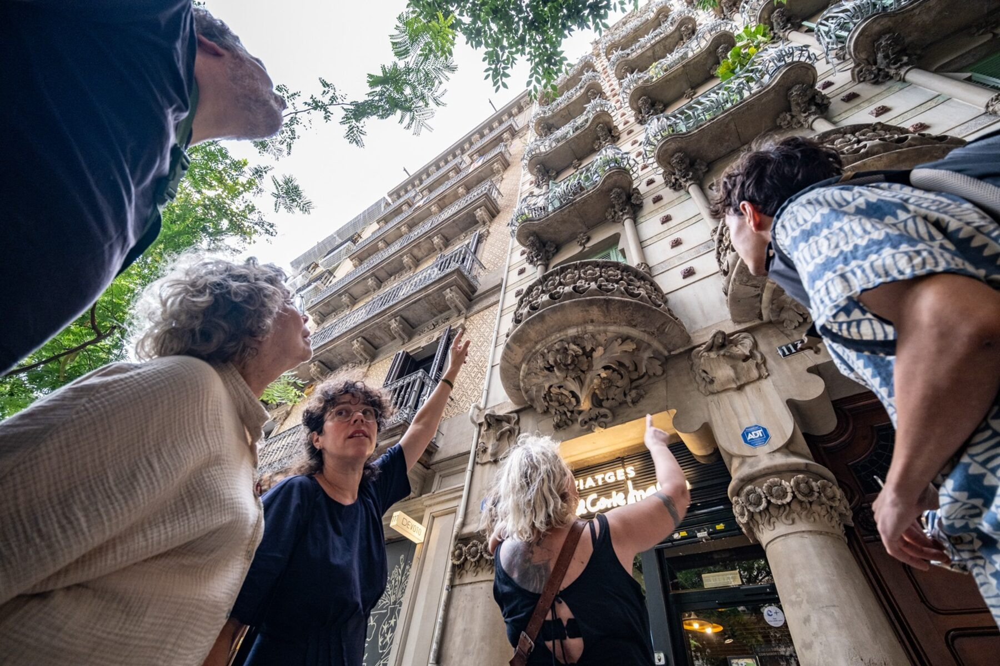

Five ways to work together
Lectures
Bringing together art history, architecture, contemporary art, and visual culture into immersive, research-based learning experiences — for museums, cultural organizations, and lifelong-learning audiences, in person and online.

Art Walks Barcelona
Research-based guided experiences that read the city through art, architecture, and history — transforming Barcelona into an open classroom.
Book an ArtWalk →The Art Circle
A structured educational journey in three parts — an independent study program moving through history, symbol, and practice. Currently in development.
Explore The Art Circle →Workshops & Educational Programs
Hands-on, interdisciplinary workshops combining discussion, observation, and artistic practice — for museums, schools, companies, and private groups.
Schedule a Workshop →
Curatorial Projects
Exhibitions, festivals, and interdisciplinary cultural projects that bring together artistic inquiry, historical research, and public engagement.